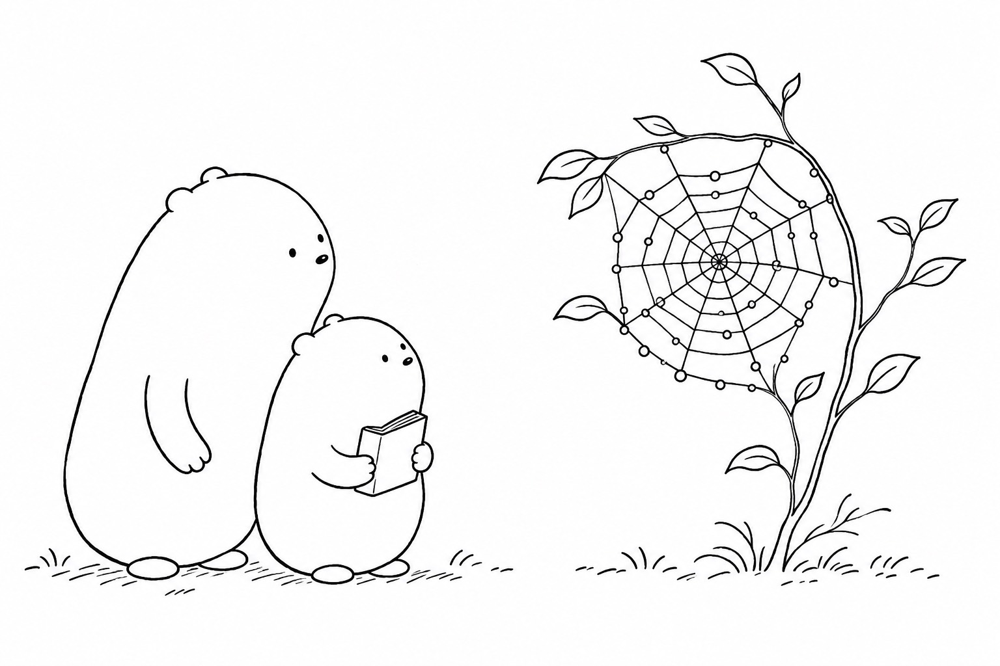

Please Don't Pat the Lace
Little Wonderer spotted a shine in the hedge,
a wheel made of whispers along the leaf edge.
"It's lace!" cried the little one. "May I tap it, just once?"
Big Wonderer answered, "Let's look — not a touch."
They counted the spokes that ran dry from the hub,
then the spiral that glittered with one tiny bead-dub.
"Some silk may be sticky; some silk may be strong,"
said the big one. "The builder feels tugs all day long."
A breeze made a shiver that raced down a line.
The little one whispered, "That signal's a sign!"
They sketched from a step back, both quiet and still,
while dew beads lit pathways along the green hill.
So if you find lace on a bush in the sun,
remember the worker whose weaving is done.
Look close with your eyes, keep your fingers in place —
and thank the small spinner. Please don't pat the lace.